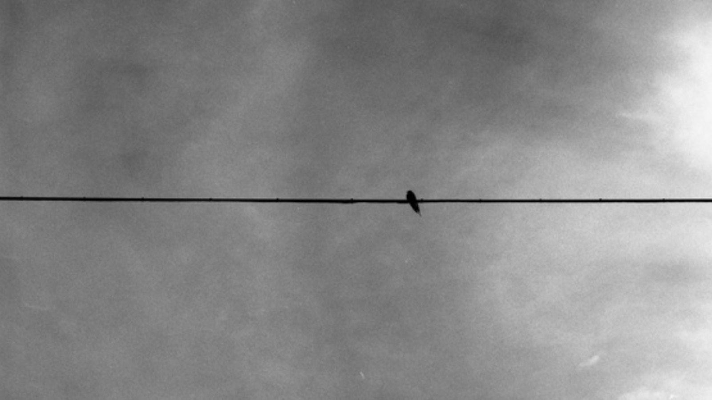
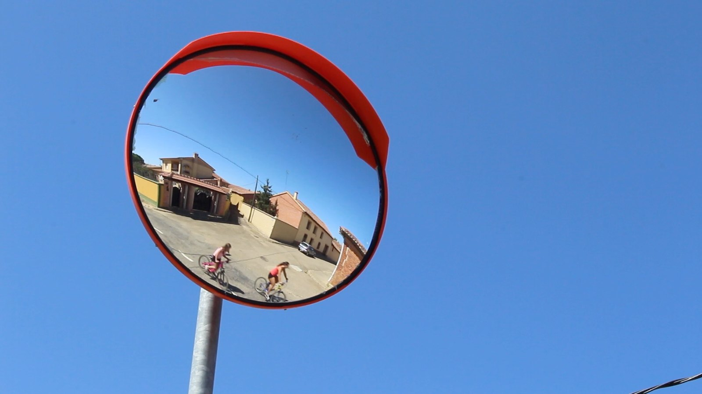
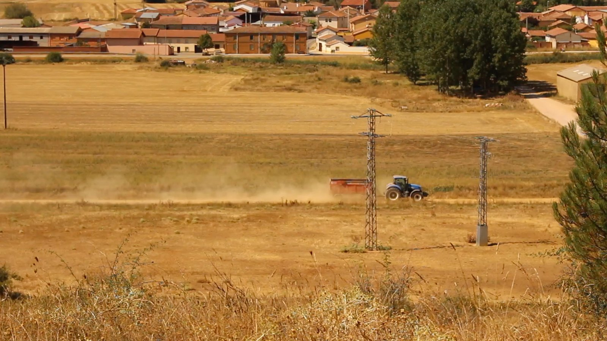
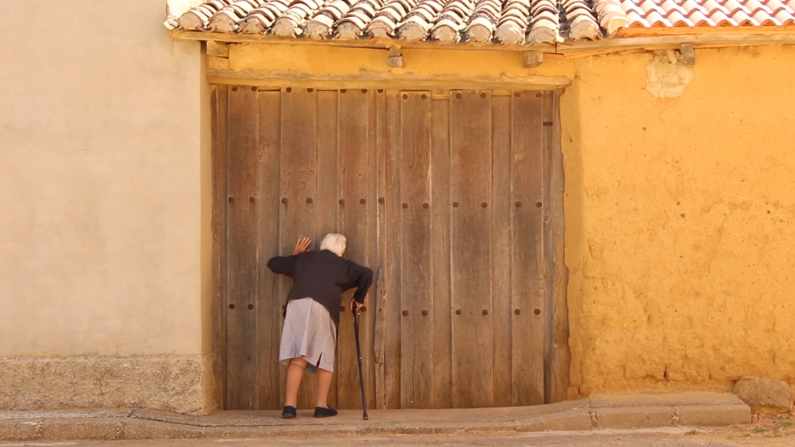
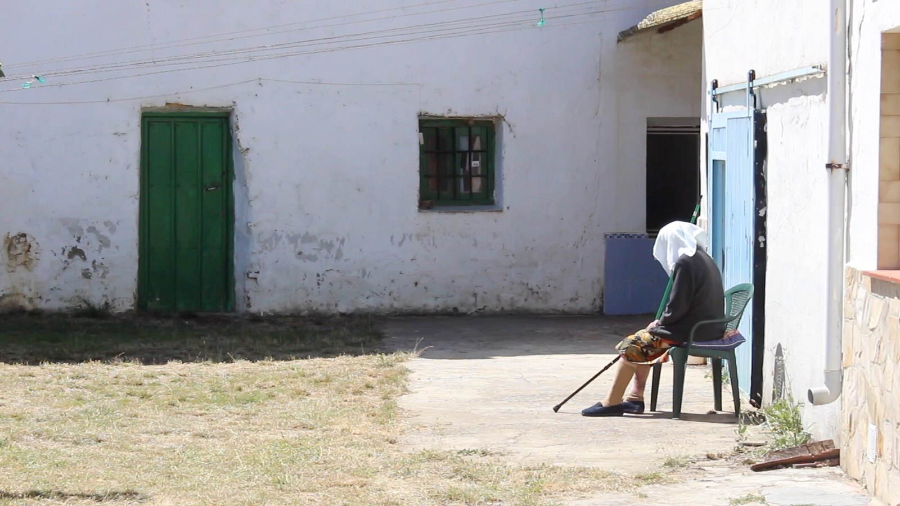
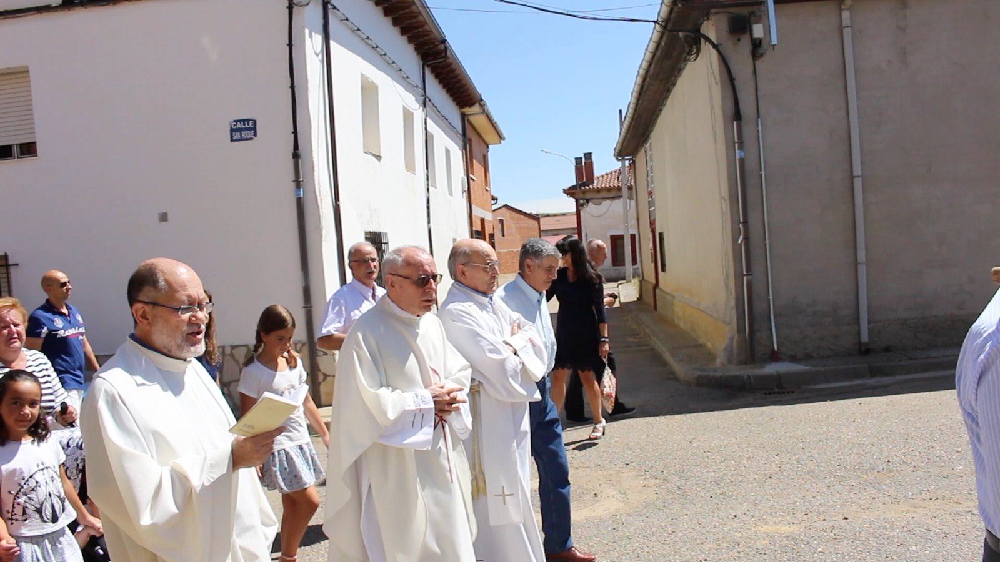

← Films
TIERRA
Don Adolfo, el maestro del pueblo, fue asesinado en Sahelices del Río durante la Guerra Civil. Testimonios y una investigación que descubren un pueblo con mucho que contar.

Ver- Año
- 2019
- Formato
- Documental
- Lugar
- Sahelices del Río, Castilla y León
- Mi papel
- Dirección y montaje
La película
TIERRA parte de un nombre: don Adolfo, el maestro de Sahelices del Río, un pequeño pueblo de Castilla y León, asesinado durante la Guerra Civil. A través de los testimonios de quienes siguen viviendo allí y de una investigación que sigue cada pista, el documental descubre un pueblo que tiene mucho que contar.
Una película sobre la memoria, hecha calle a calle: las procesiones, los portales, los campos en tiempo de cosecha y las voces que recuerdan.
Fotogramas





Dirección y montaje: Iyán Rojo